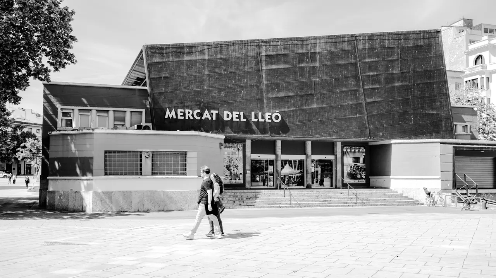
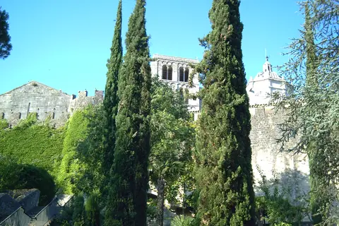
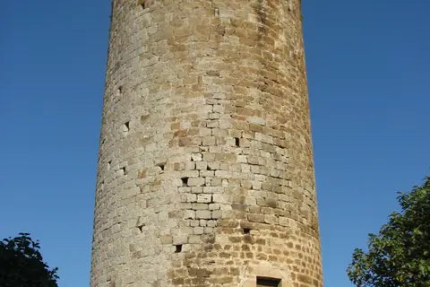

.jpg){kind=link}

Calella de Palafrugell
흰색 회반죽 가옥과 아치 회랑(Les Voltes), 쪽빛 바위 만(Cove)을 잇는 카미 데 론다 해안 산책로가 있는 코스타 브라바의 원형 어촌.

지로나 도심 남쪽 레오 광장(Plaça del Lleó)에 자리한 메르카트 델 레오(Mercat del Lleó)는 1944년 개장한 지로나 최대 규모의 공설 중앙시장이다.
지로나 시내와 엠포르다 농가, 코스타 브라바 어촌에서 매일 아침 직송되는 신선한 육류, 가금류, 해산물, 치즈, 과일, 제과류를 판매하는 60여 개의 전문 상점이 입점해 있다.
관광지로 변모하지 않은 순수한 현지인 생활 시장으로, 지로나 명물 과자인 추쇼(Xuixo), 엠포르다 달콤한 부티파라 소시지, 피레네 산맥의 숙성 치즈 등을 구매하거나 이동일 피크닉 간식을 조달하기에 가장 훌륭한 장소다.
바스카라(Bàscara) 숙소 취사용 식재료를 장보거나 코스타 브라바 드라이브 중 먹을 과일과 하몽 샌드위치를 준비하기에 최적이다. 시장 내부의 작은 바(Bar)에서 현지 상인들과 섞여 갓 구운 추쇼와 코르타도(Cortado)를 마시는 아침 경험을 추천한다.
| 운영시간 | 월–금 07:00–14:00 · 토 07:00–14:30 |
|---|---|
| 휴무 | 일요일 및 공휴일 휴무 |
| 가격대 | €5-€15 |
| 예약 | 예약 불필요 — 시립 중앙시장 |
| 소요시간 | 30–45분 재확인 |
| 항목 | 상세 정보 |
|---|---|
| 위치 | Plaça del Lleó, s/n, 17002 Girona, Spain |
| 좌표 | 41.9806, 2.8228 |
| 운영 시간 | 월–금 07:00–14:00 · 토요일 07:00–14:30 |
| 정기 휴무 | 매주 일요일 및 공휴일 |
| 입장료 | 무료 입장 |
| 주차 | 시장 지하 및 인근 유료 공영주차장 이용 |
| 접근 교통 | 지로나 역에서 도보 8분, 인디펜덴시아 광장에서 도보 7분 |
| 공식 정보 | 공식 웹사이트 (verified_at: 2026-08-21) |
미쉐린 3스타 '엘 세예르 데 칸 로카(El Celler de Can Roca)'의 셰프들도 식재료 영감을 얻기 위해 즐겨 찾는 시장으로 알려져 있다.
흰색 회반죽 가옥과 아치 회랑(Les Voltes), 쪽빛 바위 만(Cove)을 잇는 카미 데 론다 해안 산책로가 있는 코스타 브라바의 원형 어촌.

앙리 마티스와 앙드레 드랭이 야수파(Fauvism)를 탄생시킨 지중해 항구마을이자 마요르카 왕국의 해상 왕궁.

세계 최대 폭(23m)의 기둥 없는 단일 고딕 신랑과 11세기 창조의 태피스트리를 품은 카탈루냐 고딕의 걸작.

기원전 1세기 로마 성벽부터 14세기 카롤링거·중세 성벽을 따라 걸으며 구시가지 붉은 지붕과 피레네산맥을 360도로 조망하는 공중 산책로.

구시가지와 신시가지를 가르는 오냐르 강변의 파스텔톤 채색 가옥들과 구스타브 에펠의 붉은 철교.

엠포르다 평야가 내려다보이는 언덕 위에 완벽하게 복원된 카탈루냐 고딕 석조 요새 마을.